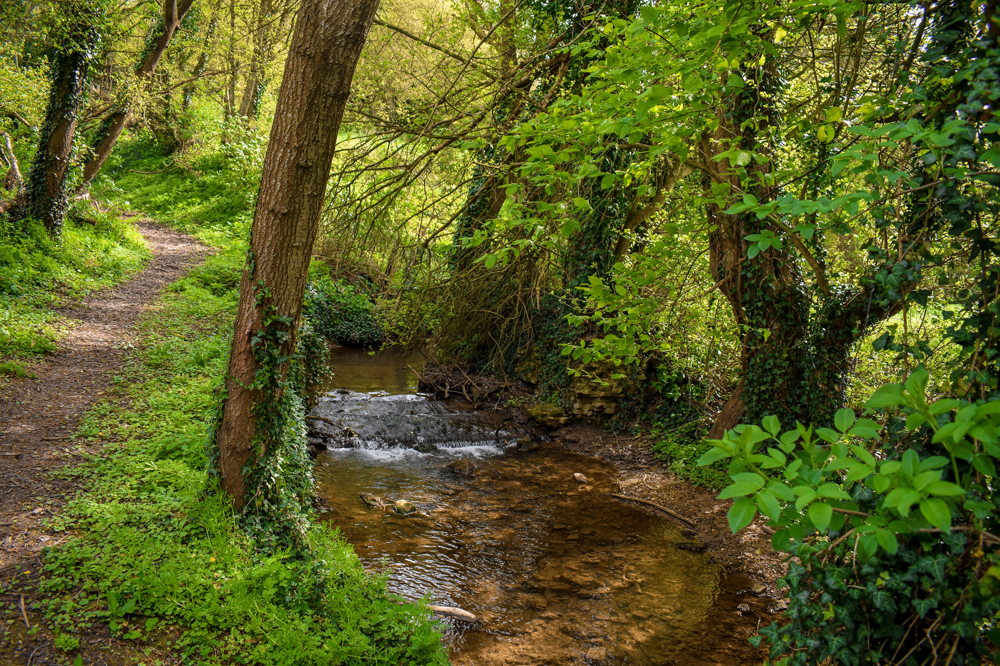
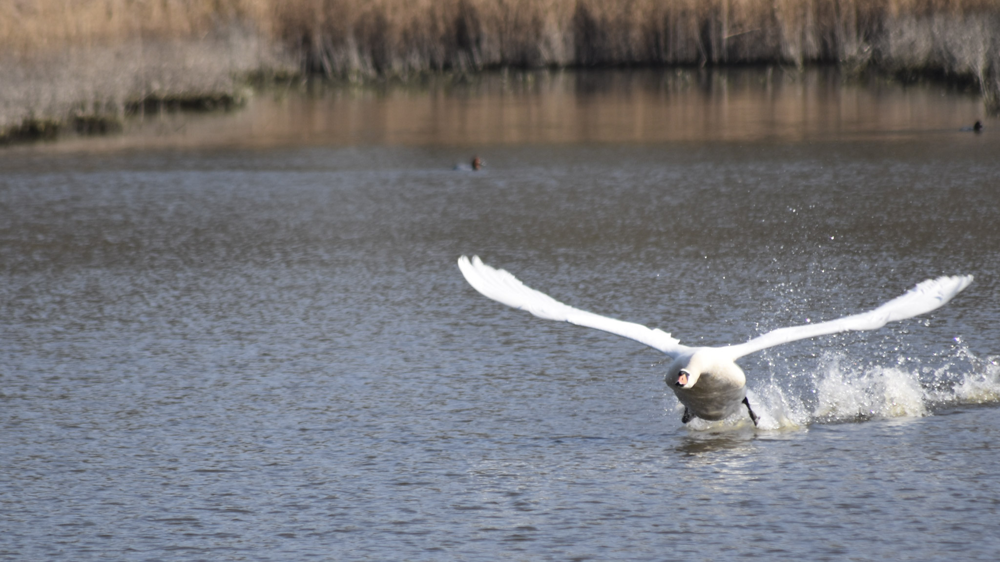

Il y a deux ans, j'ai chaussé mes premières vraies chaussures de rando, mis mon sac sur le dos, et je suis partie. Seule. Sur un sentier que je ne connaissais pas, dans une forêt que je n'avais jamais traversée. Et pendant les dix premières minutes, j'ai eu peur.
Pas d'une menace précise. Juste cette petite voix dans la tête qui dit « et si quelque chose se passait mal ? »
Aujourd'hui, après des dizaines de sorties solo dans les Hauts-de-France et ailleurs, cette voix s'est tue. Pas parce que le monde est devenu plus sûr, mais parce que j'ai appris à randonner seule intelligemment — et surtout, parce que j'ai compris ce que ça m'apportait de randonner sans personne pour décider à ma place.
Cet article, c'est tout ce que j'aurais aimé lire avant ma première sortie solo.
« Mais t'as pas peur ? »
C'est la première question qu'on me pose. Toujours.
La réponse honnête : oui, au début j'avais peur. Une peur diffuse, pas vraiment rationnelle, mais bien réelle. Peur de me perdre. Peur de tomber sans que personne le sache. Peur du regard des autres sur une femme seule sur un sentier.
Et puis j'ai fait quelque chose de simple : j'ai commencé petit. Très petit. Une heure de marche près de chez moi, sur un sentier balisé que je connaissais vaguement. Puis deux heures. Puis une demi-journée.
À chaque sortie, la peur s'est rognée un peu. Pas disparue d'un coup — rognée, progressivement, par l'expérience. Aujourd'hui je pars pour des journées entières sans même y penser deux fois. La confiance, ça se construit kilomètre après kilomètre.
Ce que j'aurais aimé qu'on me dise : la peur que tu ressentiras la première fois n'est pas un signal que tu ne dois pas le faire. C'est juste ton cerveau qui découvre quelque chose de nouveau.
Ce qu'on ne dit pas assez : les comportements déplacés, ça arrive
Autant être honnête là-dessus, parce que les autres articles ne le disent pas et c'est dommage.
Oui, il m'est arrivé de croiser des hommes au comportement bizarre sur un sentier. Un regard qui s'attarde trop longtemps. Un type qui fait demi-tour et repasse deux fois au même endroit sans raison apparente. Des remarques qu'on n'oserait pas sortir ailleurs mais que certains se permettent quand ils voient une femme seule en forêt, comme si la nature était une zone sans règles sociales.
Ce n'est pas la majorité des gens qu'on croise — loin de là. La grande majorité des randonneurs sont des gens respectueux, souvent passionnés, avec qui un signe de tête ou un « bonne balade » suffit à créer un lien simple et agréable.
Mais ces situations existent, et je préfère qu'on en parle plutôt que de faire semblant que les sentiers sont un monde idéal où rien de tout ça n'arrive.
Ma façon de gérer : je continue. Je ne m'arrête pas, je ne réponds pas, je n'engage pas la conversation. Je garde mon rythme, je garde ma trajectoire, et je passe. Pas question de changer mes plans ou de rentrer plus tôt à cause de ça. Ces comportements sont le problème de ceux qui les ont, pas le mien — et certainement pas une raison de rester chez moi.
Ce qui m'aide concrètement dans ces moments : avoir mon téléphone accessible (pas au fond du sac), connaître l'itinéraire par cœur pour ne pas avoir l'air perdue ou hésitante, et marcher avec une posture assurée. Pas de la frime — juste ne pas donner l'impression d'être vulnérable.
Ça ne m'a jamais empêchée de repartir le week-end suivant. Et ça ne m'empêchera jamais.

Mes réflexes sécurité — ceux que j'applique à chaque sortie
Je ne pars jamais sans avoir fait ces quatre choses. Pas par anxiété — par habitude, comme on vérifie ses clés avant de fermer la porte.
Rien de révolutionnaire. Mais ces quatre réflexes, appliqués systématiquement, m'ont permis de ne jamais me retrouver dans une situation vraiment délicate. Retrouve d'ailleurs plus de conseils comme ceux-ci dans mes bons plans de randonneuse.
Ce que randonner seule m'a appris que randonner à plusieurs ne m'aurait jamais appris
C'est là que ça devient intéressant.
Quand on marche en groupe, on parle. On commente. On regarde son téléphone entre deux échanges. On suit le rythme des autres, on s'arrête quand les autres s'arrêtent, on repart quand les autres repartent.
Quand on marche seule, il se passe quelque chose de différent. Le silence n'est plus un vide à remplir — il devient une matière. On commence à entendre des choses qu'on n'entendait pas. Un pic épeiche qui tape dans un tronc à cinquante mètres. Le bruit de ses propres pas qui change selon le sol. Le vent dans les herbes hautes juste avant qu'il arrive sur soi.
Et on se retrouve face à soi-même d'une façon que la vie quotidienne ne permet presque jamais.
Je ne dis pas ça pour faire poétique. Je dis ça parce que certaines de mes meilleures décisions personnelles ont été prises sur un sentier. Parce que des choses que je n'arrivais pas à démêler dans ma tête se sont clarifiées toutes seules en marchant trois heures dans le bois de Saint-Pierre.
Cette liberté-là, une fois qu'on l'a goûtée, on ne peut plus s'en passer.
Ce que je préfère aux rencontres humaines : les rencontres animales
Je vais être honnête : la rando solo ne m'a pas encore convaincue sur l'aspect rencontres humaines. Je suis bien toute seule dans ma bulle, et je n'ai pas spécialement envie qu'on vienne la percer.
Ce qui me fait vraiment m'arrêter net au milieu d'un sentier, c'est tout autre chose.
Un matin de novembre dans le bois de Saint-Pierre, j'ai entendu un bruissement dans les fougères à une dizaine de mètres. J'ai ralenti. Puis stoppé. Et là, un chevreuil a traversé le sentier à moins de quinze mètres de moi, s'est arrêté une seconde — juste une seconde — a tourné la tête dans ma direction, et a disparu dans les arbres.
C'est pour ça que j'emporte mon appareil photo et mon gros téléobjectif à chaque sortie. Pas pour les paysages — enfin, pas seulement. Pour ça. Ces fractions de seconde où un animal décide de te laisser entrer dans son monde.
Randonner seule change tout pour la faune. Pas de voix, pas de groupe, pas de bruits parasites. Tu deviens presque transparente. Les oiseaux ne s'envolent pas à ton approche. Les chevreuils restent plus longtemps. J'ai photographié des hérons en vol rasant, des buses en train de chasser, un écureuil qui ne m'avait pas entendue arriver — retrouve certaines de ces photos dans ma galerie.
Mon matériel photo pour la rando
La patience, c'est d'ailleurs quelque chose que la rando solo t'apprend mieux que n'importe quelle autre activité. Quand tu es seule, tu peux t'arrêter vingt minutes sans que personne soupire. Tu peux attendre qu'un héron reprenne son envol. Tu peux t'asseoir sur un tronc et observer sans avoir à justifier pourquoi.

Mon sac de randonneuse solo — ce que j'emporte vraiment
Pas de liste exhaustive avec cinquante items. Ce que j'ai réellement dans mon sac pour une journée dans les Hauts-de-France :
Indispensables (jamais sans)
Pour la photo (toujours)
Ce que j'ai arrêté d'emporter
Le poids de mon sac tourne autour de 5-6 kg avec le matériel photo. C'est plus lourd que la moyenne, mais je ne partirai jamais sans mon objectif.
Ce que j'ai envie de te dire si tu hésites encore
Si tu lis cet article en te demandant si tu peux le faire, la réponse est oui.
Pas « oui mais seulement si tu es sportive. » Pas « oui mais seulement si tu connais déjà bien la rando. » Juste oui.
Tu commences petit. Un sentier balisé, une heure, proche de chez toi. Tu préviens quelqu'un. Tu rentres. Et tu te demandes pourquoi tu ne l'as pas fait avant.
Est-ce que tu croiseras peut-être des comportements déplacés ? Peut-être, oui. Est-ce que ça doit t'arrêter ? Non. Ces comportements ne définissent pas la rando — ils définissent ceux qui les ont.
La rando solo féminine, c'est une façon de se retrouver. D'aller à son rythme. De prouver à soi-même, encore et encore, qu'on est capable. Et de se retrouver face à un chevreuil dans la lumière du matin en se disant que c'est pour ça qu'on fait tout ça.
Et ça, ça n'a pas de prix.
Retrouve toutes mes traces GPS et mes sorties sur mon Carnet de randonnée, et mes photos sur Instagram et Facebook — @lachtiterandonneuse.
Voir mes parcours Komoot →